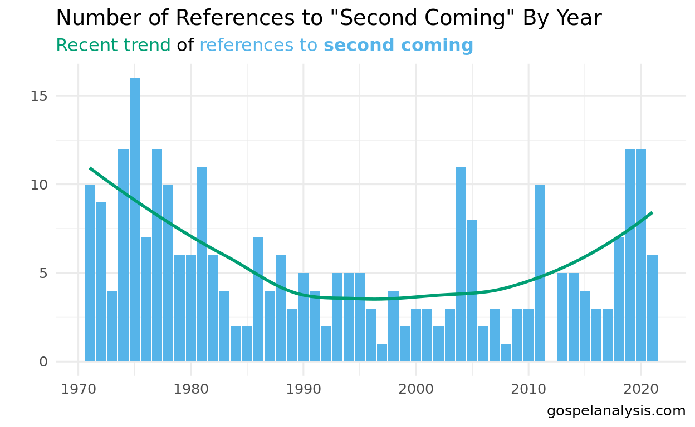
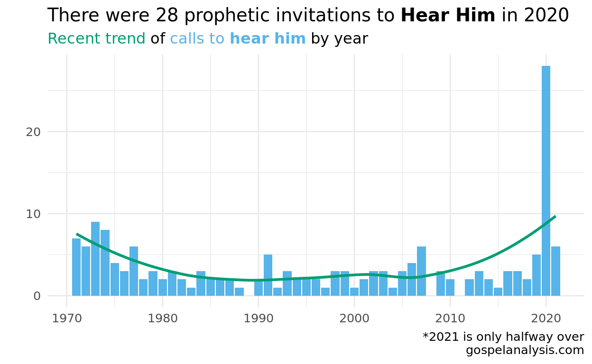

While the phrase “second coming” isn’t used often in the scriptures, other phrases are. Interestingly, there’s a spike in the invitation to “hear Him”, perhaps commonly seen on social media as #hearhim.
Disciples of Christ eagerly await His return to the earth, commonly known as the “Second Coming”. But where does this phrase come from, and how is it being used today?
The exact phrase “second coming” is only mentioned once in all of the scriptures:
To lift up your voice as with the sound of a trump, both long and loud, and cry repentance unto a crooked and perverse generation, preparing the way of the Lord for his second coming.(D&C 34:6)
Yet the phrase is mentioned often in General Conference. It was mentioned a lot in the mid 70’s, but seems to be picking back up again.

Turns out that the authors in the Scriptures just referred to the Savior’s Second Coming in a different way. Looking at the Gospel Topics: Second Coming, Topical Guide: Jesus Christ, Second Coming, and the Index to the Triple Combination: Jesus Christ, Second Coming of, there are a few other phrases used to refer to His coming.
They that are wise and have received the truth, and have taken the Holy Spirit for their guide, and have not been deceived—verily I say unto you, they shall not be hewn down and cast into the fire, but shall abide the day….For the Lord shall be in their midst, and his glory shall be upon them, and he will be their king and their lawgiver. D&C 45:57-59
The hour and the day no man knoweth, neither the angels in heaven, nor shall they know until he comes. D&C 49:7.
King of glory shall come… Ps 24:7
they that are Christ’s at his coming… 1 Cor 15:23
If we use these and phrases to search for His coming, we’d see a lot more references.
The Lord teaches us that those who are prepared for His coming “have taken the Holy Spirit for their guide” (D&C 45:57-59) and warns that those “that will not hear my voice, the same shall ye not receive into my church, for [those] I will not receive at the last day.” (Mosiah 26:28).
We can see the 20 most recent references to “Hear Him”:
This phrase has recently spiked.

So, how will you prepare for His second coming? Perhaps a good place to start is to practice hearing Him